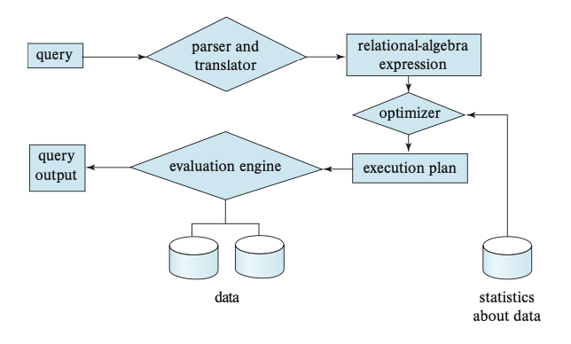

Query Processing
Query Processing指的是从数据库抽取数据的一系列活动。是用户和物理存储底层交互的中间层，其中包含三个阶段：
- 解析和翻译（Parsing & translation）：解析用户的意图（通过构造Abstract Syntax Tree），并与DBMS内部的数据结构相对应（通过binder）然后进行翻译
- 优化（Optimization）：对Query流程进行优化，找到开销最小的执行
- 评估（Evaluation）：对一个Query会有不同的优化结果，定量评估其开销
我们可以先对这三个阶段在high-level的角度理解，之后在深入到具体的算法细节。
High-level Overview
一个Query在执行之前，需要先转化为系统理解的方式。SQL语句是声明式语言，意思就是仅仅告诉DBMS我需要什么数据。这就需要DBMS把如何获取数据、哪种方式最优等等这一系列问题隐藏起来，并自动的选取开销最小的方式（最优）执行，以便用户能最快最准确的拿到他想要的结果。
用户输入SQL语句后，首先做的就是解析。让DBMS明白这个query的语义。在这过程中，解析器会做一些检查，比如用户的句法是否被DBMS定义、是否正确、是否能在DBMS中找到对应的数据结构等等。构建AST之后，它便会将其翻译成关系代数表达式，方便后续的优化。
给定一个AST后，用户的一个Query可以被翻译为不同的关系代数表达式。而每一个表达式中的操作算子又可以采用很多种不同的算法实现。因此，如果想评估一个query，我们不仅仅需要关系代数表达式，还需要标注一些评估算子开销的必要信息。一个标有相关信息的关系代数算子成为evaluation primitive；一系列被标注的算子构成的query关系代数表达式被称为一个query plan。
优化的目的就是从很多种query plan中找到开销最小的plan，并把plan送给execution engine执行。
下图是书“Database System Concepts”中的图，可以更好的理解Query Processing在数据库中的流程：

Measures of Query Cost
我们知道，对于一个query，可能会有很多不同的query plan。问题在于，我们如何从不同的plan中寻找出最优的方法去执行呢？和深度学习一样，我们需要某种evaluation的方法，或者说benchmark。思路是，利用这些评估标准，计算每一个plan中每一个算子的开销，把一个plan的所有算子开销加起来，对比不同plan的结果。
评估的方式可以根据不同的硬件资源来决定，比如：
- 硬盘访问时间
- CPU执行时间
- 在分布式数据库中，数据交换的时间
在早些年的数据库系统中，由于大量的数据存储在磁盘上，因此IO cost占据主要位置。但随着固态硬盘的出现，存取速度快了很多，因此不得不考虑CPU执行的速度。不过，CPU执行时间相对简单，很好计算，只需要提前设置一些参数就能完成，因此在衡量query cost的过程中主要还是对IO存取进行考虑。
我们用block转移数量（the number of blocks transferred）和随机IO访问量（the number of random IO access）作为两个重要的评估参数。如果需要平均$t_T$秒从磁盘转移一个block数据，平均$t_S$秒随机读取一个block，那么如果转移b个block和进行S次随机访存需要$b t_T+St_S$秒。